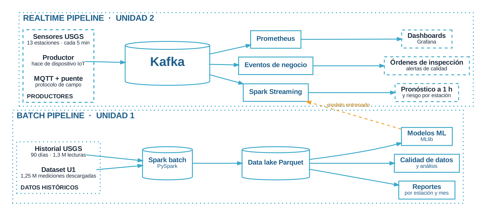
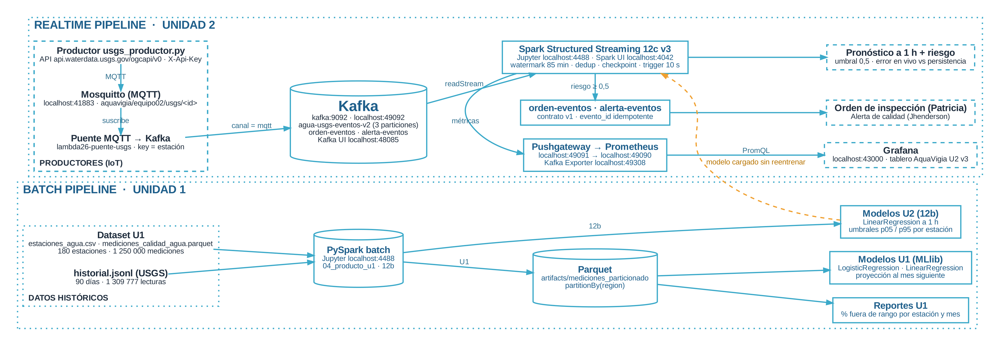

Arquitectura¶
AquaVigía usa una arquitectura Lambda: una capa batch para el histórico y el entrenamiento, una capa de velocidad para las lecturas en vivo, y una capa de servicio común (Kafka para los eventos de negocio y Grafana para el tablero). Elegimos Lambda porque el caso necesita las dos cosas: tendencias y modelos sobre el histórico, y alertas sobre lo que está pasando ahora.
La arquitectura se muestra en dos niveles: una vista general y una vista detallada con los nombres de los componentes, las API y los puertos.
Nivel 1: vista general¶

Los dos flujos corren en paralelo:
- Batch (Unidad 1): datos históricos → Spark batch → data lake en Parquet → modelos, calidad de datos y reportes.
- Tiempo real (Unidad 2): sensores del USGS → productor → MQTT y puente → Kafka → Spark Streaming → pronóstico y riesgo, eventos de negocio y métricas.
Se conectan en un punto: el modelo se entrena por lotes sobre el historial y Spark Streaming lo carga sin reentrenar (flecha discontinua).
Nivel 2: vista detallada¶

| Componente | Imagen o código | Dirección dentro de Docker | Desde Windows |
|---|---|---|---|
| Productor del USGS | usgs_productor.py (Python en Windows) |
consulta api.waterdata.usgs.gov/ogcapi/v0 |
|
| Mosquitto (MQTT) | eclipse-mosquitto:2.0.20 |
mosquitto:1883 |
localhost:41883 |
| Puente MQTT a Kafka | uso-agua-usgs/app/bridge_mqtt_kafka_usgs.py |
||
| Kafka (modo KRaft) | apache/kafka:4.3.1 |
kafka:9092 |
localhost:49092 |
| Kafka UI | ghcr.io/kafbat/kafka-ui:v1.5.0 |
localhost:48085 |
|
| Kafka Exporter | danielqsj/kafka-exporter:v1.10.0 |
kafka-exporter:9308 |
localhost:49308 |
| PySpark 4.2 + Jupyter | pyspark/Dockerfile |
localhost:4488 (Jupyter), localhost:4042 (Spark UI) |
|
| Pushgateway | prom/pushgateway:v1.11.1 |
pushgateway:9091 |
localhost:49091 |
| Prometheus | prom/prometheus:v3.14.0 |
prometheus:9090 |
localhost:49090 |
| Grafana | grafana/grafana:11.4.0 |
grafana:3000 |
localhost:43000 |
Las versiones exactas de todas las imágenes están en la lista de comprobación.
Capa de integración (Unidad 3)¶
Los diagramas muestran los flujos de las Unidades 1 y 2. En la Unidad 3 se agregaron dos piezas que los envuelven:
- Arranque ordenado (
scripts/levantar.ps1): cada servicio declara cuándo está listo (healthcheck) y los que dependen de otro esperan a que lo esté (depends_onconservice_healthy). - Ejecución integrada (cuaderno 13 de cada integrante): lee el Parquet gold de la U1, corre el streaming de la U2 con el modelo del 12b, publica eventos y métricas, y verifica cada paso con compuertas. El resultado aparece en la fila "Ejecución integrada U3" de Grafana.
flowchart TB
A[Compuertas previas] --> B[Batch U1: Parquet gold + compuertas de calidad]
B --> C[Streaming U2: 240 s con el modelo del 12b]
C --> D[Compuertas de salida: eventos en Kafka]
D --> E[KPI de tiempo p50 y p95]
E --> F[Pushgateway y confirmación en Prometheus]
F --> G[Manifiesto JSON]Carpetas principales¶
| Carpeta | Contenido |
|---|---|
kafka/ |
Compose de Kafka, Kafka UI y Kafka Exporter |
pyspark/ |
Imagen de PySpark con Jupyter y su Compose. pyspark/sesiones/ se monta en /opt dentro del contenedor |
pyspark/sesiones/AquaVigia_Producto_U1/<integrante>/ |
Cuaderno batch 04, datos de entrada (data/) y artefactos (artifacts/, no versionado) |
pyspark/sesiones/AquaVigia_Producto_U2/<integrante>/ |
Cuadernos 12a a 12e, productor del USGS, costos y tableros de la Unidad 2 |
pyspark/sesiones/AquaVigia_Producto_U2/data/ |
historial.jsonl del USGS (no versionado) |
pyspark/sesiones/AquaVigia_Producto_U3/<integrante>/ |
Cuaderno 13 de ejecución integrada y sus manifiestos (no versionados) |
obs/ |
Prometheus, Pushgateway, Grafana y el tablero que Grafana carga al arrancar |
uso-agua-usgs/ |
Mosquitto y el puente MQTT a Kafka |
scripts/ |
Levantar el sistema, crear tópicos y probar la salud |
docs/ |
Esta documentación (MkDocs) y las evidencias de la Unidad 3 |
Decisiones técnicas¶
| Decisión | Por qué |
|---|---|
| Lambda y no Kappa | El modelo se entrena sobre 90 días de historial y el Parquet de la U1 se analiza por lotes. Reprocesar todo como stream no aportaba nada al caso. |
| Datos reales del USGS en la Unidad 2 | Con datos simulados no se puede medir el retraso real de publicación ni validar el modelo frente a lo que de verdad pasó. El USGS publica lecturas cada 5 minutos con una API pública. |
| MQTT y un puente, en lugar de escribir directo a Kafka | Un dispositivo de campo habla MQTT, no Kafka. El puente agrega la cabecera canal=mqtt y usa la estación como key. |
3 particiones con key estacion_id |
Las lecturas de una estación quedan en orden dentro de su partición, y el consumo se puede repartir. |
Tiempo del evento = fecha_medicion_utc |
El USGS publica con 40 a 54 minutos de retraso. La ventana y el watermark se basan en cuándo midió el sensor, no en cuándo llegó el dato. |
| Watermark de 85 minutos | Medido en el 12a: percentil 99 del retraso por 1,2. |
| Deduplicación dentro del watermark | Kafka garantiza entrega "al menos una vez". Una lectura repetida no debe pronosticarse dos veces. |
| Inferencia sin estado | Cada evento trae su contexto (rezagos y variables simultáneas), así que una sola lectura basta para pronosticar y no hay estado que perder al reiniciar. |
evento_id determinista (UUID v5) |
Si un micro-lote se reprocesa, el evento de negocio tiene el mismo id y el consumidor puede descartarlo. |
| Pushgateway para las métricas de Spark | Un cuaderno no expone /metrics para que Prometheus lo lea. Su limitación (el último valor persiste) se mitiga con el panel de antigüedad. |
| Compuerta en el p50 de la latencia, no en el promedio | Una cola de mensajes acumulados infla el promedio sin describir al evento típico. El p95 solo advierte. |
Contratos de los eventos¶
Evento de sensor, versión 2 (agua-usgs-eventos-v2, key = estacion_id):
| Campo | Significado |
|---|---|
version_esquema |
2 |
evento_id |
identificador único |
estacion_id |
estación USGS, por ejemplo USGS-01491000 |
variable, codigo_parametro |
temperatura_c (00010), oxigeno_mgl (00300), ph (00400), turbidez_fnu (63680), y también conductividad y nitrato |
valor |
lectura del sensor |
fecha_medicion_utc |
tiempo del evento: cuándo midió el sensor |
fecha_ingesta_utc, retraso_min |
cuándo llegó al pipeline y cuántos minutos después |
origen, fuente |
vivo, historial o reproduccion; USGS |
contexto.rezagos |
la misma variable 5, 10, 15, 30 y 60 minutos antes (l1, l2, l3, l6, l12) |
contexto.simultaneas |
las otras variables de la estación en el mismo bloque de 5 minutos |
Un consumidor de la versión 1 sigue funcionando: solo ignora contexto.

Evento de negocio, versión 1 (orden-eventos y alerta-eventos, key = estacion_id|variable):
| Campo | Significado |
|---|---|
evento_id |
UUID v5 de tipo, estación, variable y bloque de 5 minutos (idempotente) |
tipo, integrante |
orden_inspeccion (Patricia) o alerta_calidad (Jhenderson) |
estacion_id, variable |
dónde y qué |
valor_actual, pronostico_1h, riesgo |
el dato, el pronóstico a una hora y la probabilidad de salir del rango |
umbral_p05, umbral_p95, direccion |
rango de la estación y qué lado preocupa |
ts_medicion_utc, creado_utc, estado |
cuándo se midió, cuándo se creó el evento y su estado (creada) |
modelo, evento_origen_id, runId |
modelo que pronosticó, lectura que lo originó y corrida |
Regla de negocio: no se repite el evento para la misma estación y variable antes de 60 minutos.